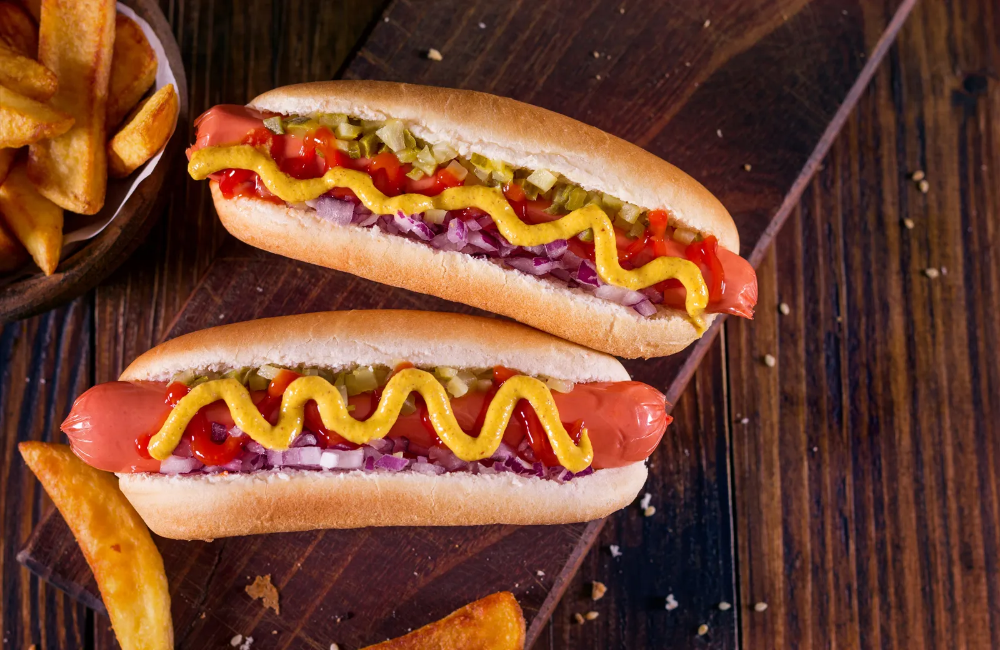

Hot Dog
Description
A Hot dog is a dish consisting of a grilled, steamed, or boiled sausage served in the slit of a partially sliced bun.
Ingredients
- 1 hot dog (or as many more as you need).
- 1 hot dog bun (or as many more as you need).
- Yellow mustard.
- Other condiments, as desired, (pickle relish, ketchup, sport peppers, sauerkraut, onions, cheese, and so forth).
Steps
- Simmer in a saucepan over medium-high heat, bring enough water to cover the dogs to a simmer.
- Place hot dogs in the water and simmer for 8 to 10 minutes
- Put the hot dog in a bun
- Serve and enjoy